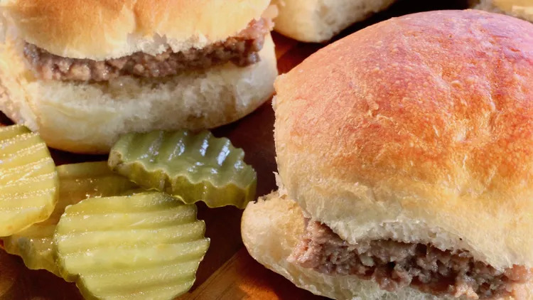

Almost White Castle Hamburgers

Description
This copycat recipe comes pretty close to the real deal. Serve each slider with American cheese, dill pickle slices, and Düsseldorf mustard.
Ingredients
- 1 1/2 pounds ground chuck
- 1/3 cup plain bread crumbs
- 1 large egg
- 1 (1 ounce) package dry onion soup mix
- 2 tablespoons water
- 1/2 teaspoon ground black pepper
- 24 small square dinner rolls
Directions
- Preheat the oven to 400 degrees F (200 degrees C).
- Combine ground chuck, bread crumbs, egg, onion soup mix, water, and black pepper in a bowl; press into a 10x15-inch jelly roll pan. Prick holes through the chuck mixture for ventilation while cooking.
- Bake in the preheated oven until browned and cooked through, about 10 minutes. An instant-read thermometer inserted into the center should read at least 160 degrees F (70 degrees C). Drain excess grease.
- Cut chuck mixture into squares the size of the rolls. Place 1 chuck patty in each roll.